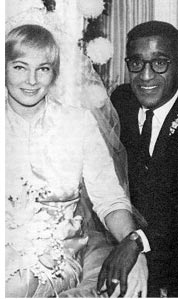
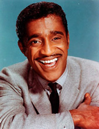

Sammy Davis Jr.
1925-1990Singer, actor, dancer. Born in Harlem, New York to black vaudeville star Sammy Davis, Sr., and the Puerto Rican dancer, Elvera "Baby" Sanchez. When he was two, Davis's parents divorced, and he was raised by his father.
A multi-talented performer, Davis recorded forty albums and made countless film, television and Las Vegas appearances in his lifetime.
Davis began his career in vaudeville, tap dancing and singing at the age of four with his adopted uncle in an act they called "Will Mastin's Gang, featuring Little Sammy." When authorities threatened to close down the act due to child labor laws, Mastin gave the tiny Davis a cigar to hold and billed him as "Silent Sam, the Dancing Midget."
Davis made his film debut by tap dancing in the 1932 short Rufus Jones For President. After continuing to perform with Mastin throughout the 1930s, at age eighteen Davis was drafted and served in the Special Services in World War II. When the war ended, he resumed dancing with what was now the Will Mastin Trio, after Davis's father joined the troupe. In 1946, Davis recorded "The Way You Look Tonight" for Capitol Records, which was chosen by Metronome magazine as Record of the Year. In the late 1940s, Davis (still with the Will Mastin Trio) opened for Frank Sinatra at the Capitol Theatre in New York, which ignited a friendship that would last a lifetime. He toured for six months with Mickey Rooney and performed in a Bob Hope benefit show. Through Jack Benny, the trio won a booking at Ciro's in Hollywood and an appearance on the Colgate Comedy Hour. After an appearance at the Copacabana in New York, Decca Records signed Davis in 1954 and released his first albums, Starring Sammy Davis, Jr., and Just for Lovers.
The 1950s brought Davis into the spotlight for both personal and professional reasons. In 1954, he made headlines when he lost his left eye in a near-fatal car crash while driving back to Los Angeles from Las Vegas. During his recovery in the hospital, he converted to Judaism, which was bruited about by the press. Davis continued treading on socially-controversial ground by carrying on a series of interracial romances, most notably with actress Kim Novak, and with the Swedish actress May Britt, whom he married in 1960.
But even in these racially backward times, Davis came into his own on a professional level. He debuted on Broadway in 1956 with the Will Mastin Trio in the musical comedy Mr. Wonderful. He began making solo appearances on television, including The Ed Sullivan Show. In 1959, he resumed his film career in a breakthrough role as Sportin' Life in Porgy and Bess (1959). In the early 1960s, he appeared with his "Rat Pack" cohorts Dean Martin, Frank Sinatra, Joey Bishop, and Peter Lawford in a series of films including Ocean's Eleven (1960), Sergeants Three (1962), and Robin and the Seven Hoods (1964). Davis returned to Broadway in 1964 as boxer Joe Wellington in a highly successful musical adaptation of the 1937 Clifford Odets drama Golden Boy.
Davis continued appearing on television variety shows and performing in Las Vegas throughout the 1970s and 1980s. In 1972, he had a No. 1 hit on the Top 40 charts with "Candy Man." He acted in two Cannonball Run films in the early 1980s, which reunited him on-screen with Dean Martin. After undergoing reconstructive hip surgery in 1985, Davis recovered sufficiently to co-star and dance with Gregory Hines in the film Tap (1989). Then, after announcing that he had successfully overcome an addiction to cocaine and alcohol, Davis embarked on a concert tour in 1988-89 with fellow Rat-packers Frank Sinatra and Dean Martin. Davis succumbed to throat cancer on May 16, 1990.
Davis was married three times, first to Loray White, a dancer; to actress May Britt, with whom he had one daughter and adopted two sons; and to Altovise Gore, a former showgirl. He wrote three autobiographies, Yes I Can (1965), Life In A Suitcase (1980) and Why Me? (1989).